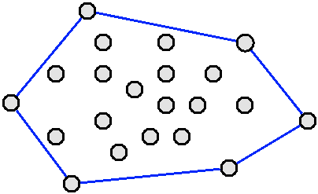
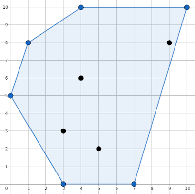

In what concerns the continuous evaluation solving exercises grade during the semester, you should submit until 23:59 of November 22nd
(this exercise will still be available for submission after that deadline, but without couting towards your grade)
[to understand the context of this problem, you should read the class #06 exercise sheet]

The convex hull of a set of 2D points is the smallest convex polygon that encloses all the points. It is a very useful geometric primitive that can give a rough idea of the shape of the set of points. It also serves as first preprocessing step to many other geometric algorithms.Given a set of 2D points in general position (i.e., such that no three points are collinear), your task is to compute their convex hull.
The first line contains an integer N, the number of points to consider.
The following N lines contain the points, one per line, as two space separated integers in the format Xi Yi.
It is guaranteed that the points are pairwise distinct and any three points are non-collinear, that is, they do not lie on a single line.
The output should contain the number of points in the convex hull, followed by the points themselves in the same format as in the input (one per line as a pair of X Y coordinates).
The points should come in counter-clockwise order, starting with the bottom most point (the one with the smaller Y coordinate; in case of a tie in Y, choose the one with the smallest X coordinate).
The following limits are guaranteed in all the test cases that will be given to your program:
| 3 ≤ N ≤ 500 | Number of Points | |
| 0 ≤ Xi, Yi ≤ 1000 | Coordinates |
| Example Input | Example Output |
10 5 2 0 5 3 3 4 10 3 0 10 10 7 0 1 8 4 6 9 8 |
6 3 0 7 0 10 10 4 10 1 8 0 5 |
The example input corresponds to the following figure (with its respective convex hull indicated in blue):
